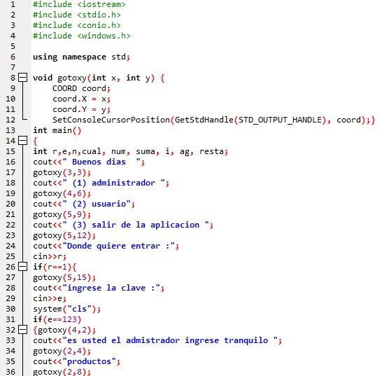
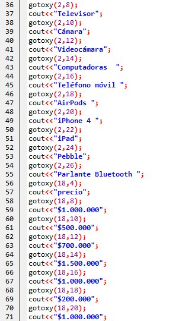
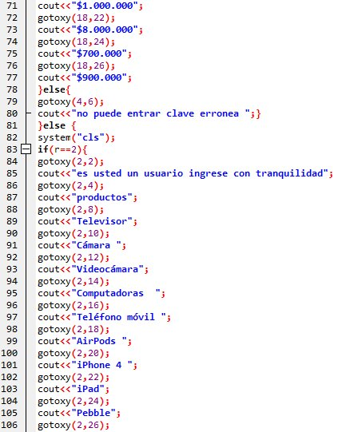
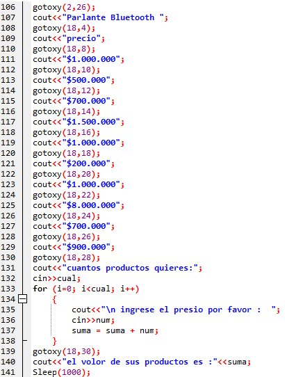
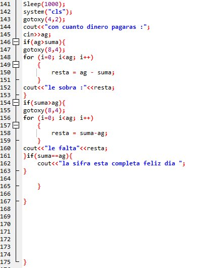

Parcial perido #1 |





opinión
En el examen parcial debiamos desarrollar todas las habilidades que hemos aprendido en lo que llevamos del periodo, para mi este examen estuvo un poco complicado dado que no soy el mejor utilizando las herramientas tecnologicas pero con mucho empeño pude lograr terminarlo, este trabajo fue basado en los conocimientos vistos en clase, fue un trabajo a conciencia lleno de esfuerso y dedicacion.